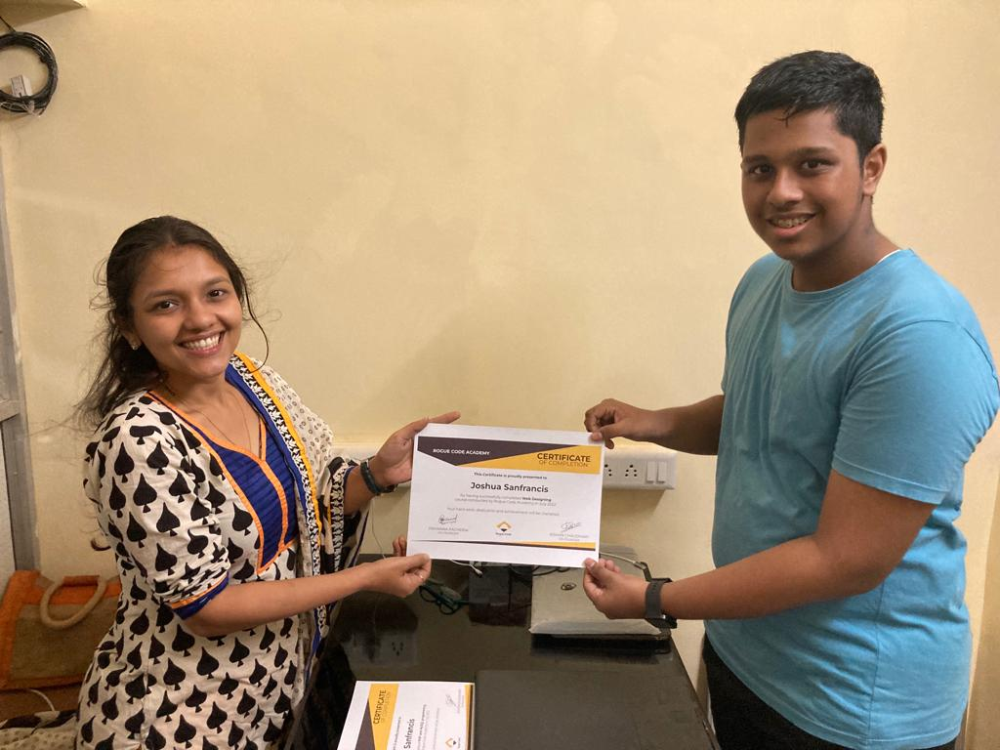

Hey! I'm Joshua Sanfrancis, and I am a multi-talented individual with a passion for creativity and technology. I am deeply involved in editing videos, photography, and coding. With a keen eye for detail and a flair for visual storytelling, I excel in the art of video editing, bringing concepts to life through captivating visuals and seamless transitions. My love for photography allows me to capture the beauty of the world around me, transforming ordinary moments into extraordinary works of art. Additionally, my proficiency in coding enables me to explore the realms of web development, where I craft interactive and visually appealing websites. With my diverse skill set and dedication to my craft, I continue to inspire and impress with my creative endeavors.

As a musician, I've cultivated a diverse range of talents, mastering instruments such as the keyboard, guitar, melodica, and cajon. My musical journey began at the tender age of three, when I first laid hands on the keyboard. Since then, I've honed my skills, immersing myself in the captivating world of melodies and rhythms. Whether I'm delicately crafting harmonies on the keyboard or strumming soulful tunes on the guitar, each instrument becomes an extension of my artistic expression. The melodica adds a unique flair to my compositions, while the cajon infuses rhythmic vitality into my performances. With each note and chord, I strive to evoke emotion and captivate audiences, embracing music as a universal language that transcends boundaries.

Over the course of four years, I've immersed myself in the world of video editing, honing my craft and pushing creative boundaries. A significant portion of my editing journey has been dedicated to working with emerging bands, where I've had the privilege of bringing their musical visions to life through captivating music videos. From capturing the raw energy of live performances to infusing narrative depth into each frame, I've strived to create visuals that resonate deeply with both the artists and their audience. Beyond music videos, I've also ventured into editing various other types of content, exploring the diverse realms of storytelling and visual communication. Through each project, I've embraced the challenge of pushing creative boundaries and refining my skills.

In the realm of web development, I specialize in crafting dynamic and immersive digital experiences through coding. Leveraging a blend of technologies including HTML, CSS, Javascript, PHP, and MySQL, I create robust and engaging websites. HTML provides the foundational structure for organizing content effectively, while CSS allows for the artistic styling and design of the user interface. With PHP and MySQL, I implement powerful back-end functionality and database management, enabling seamless data processing and user interaction. Through meticulous coding practices, I strive to deliver high-quality, scalable solutions that meet the diverse needs of clients and users alike.
Over the past year and a half, I've delved into photography, capturing the beauty of the beautiful sky as my primary focus. The allure of the sunlit sky, with its ever-changing hues and cloud formations, has been a constant inspiration for my lens. However, I've also ventured into the night, exploring the urban landscape illuminated by the glow of city lights. Nighttime photography presents a different challenge, one that I've embraced eagerly. From towering skyscrapers to intricate details of objects bathed in artificial lighting, each shot tells its own unique story of the nocturnal world. My journey behind the camera continues to evolve as I discover new perspectives and techniques to express my creativity through photography.
CERTIFICATIONS
- Web Designing, Rogue Code
- Database Management Systems, Claritech Academy
- PHP Server, Rogue Code